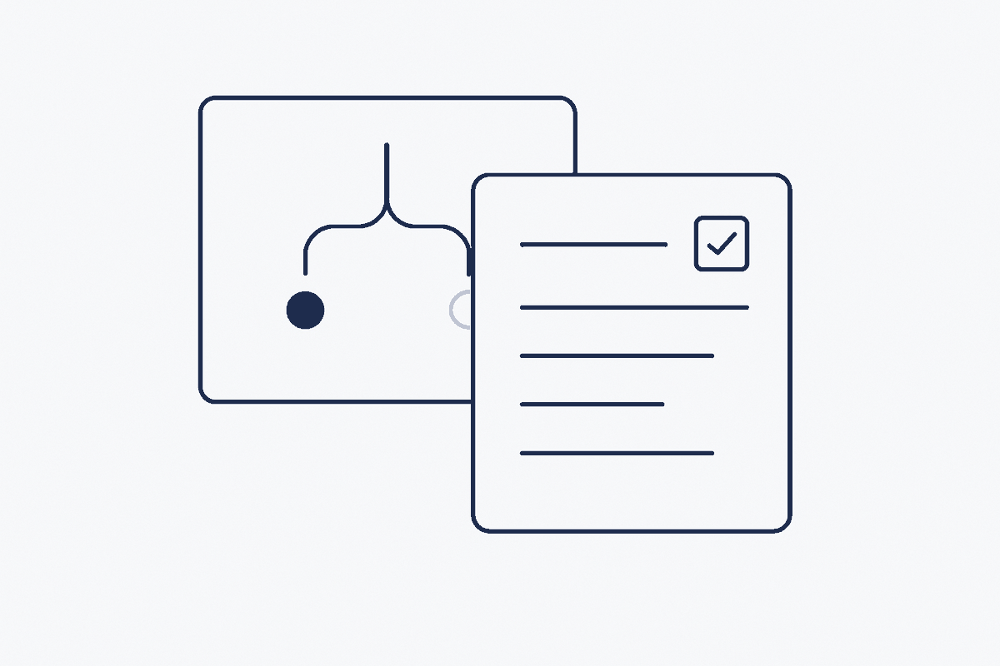

The architecture decisions behind the work, published as records rather than folklore. A decision without its reasoning has to be re-argued from scratch.

All items:
ADR 124 concept publishing to multiple sites — Accepted — 2026-07-31. Bouwt op ADR-080-folder-per-concept (folder-per-concept) en de SBM/MDDE folder-per-unit